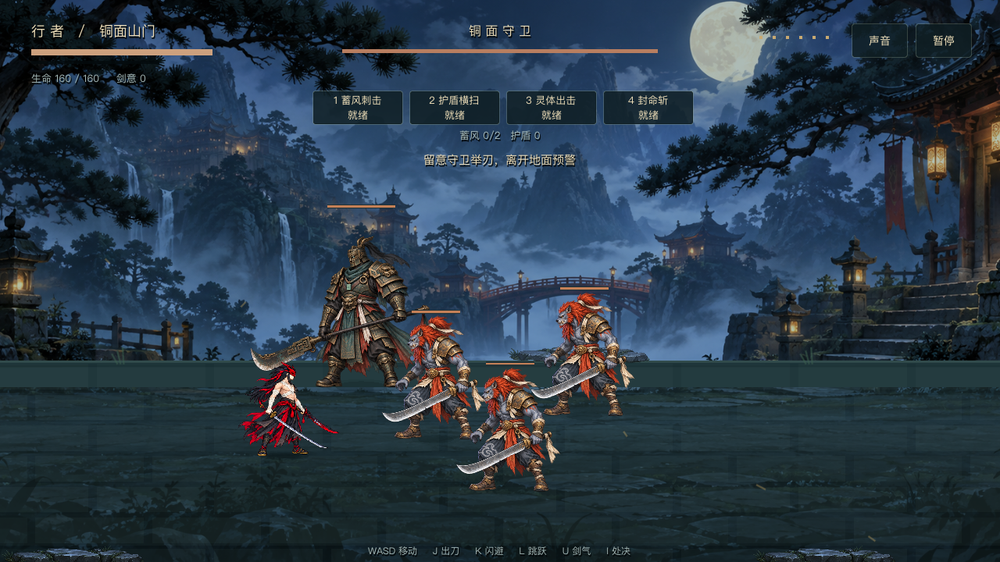
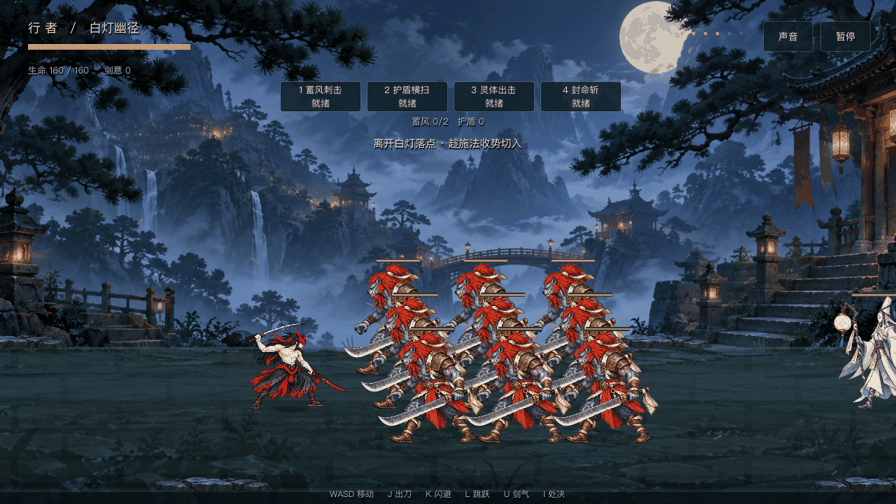
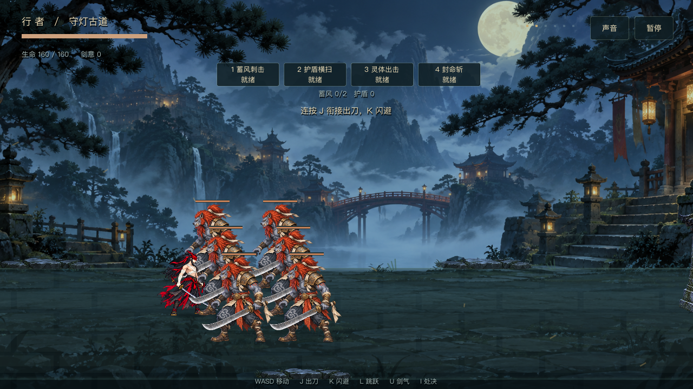
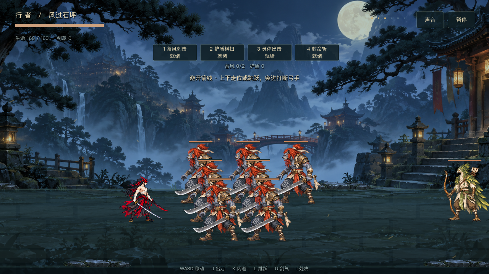
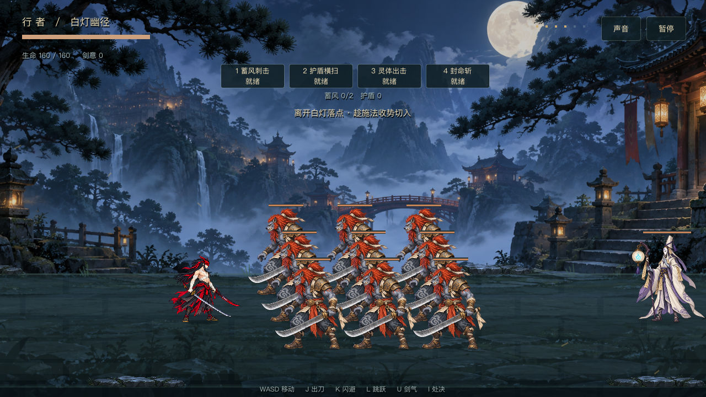
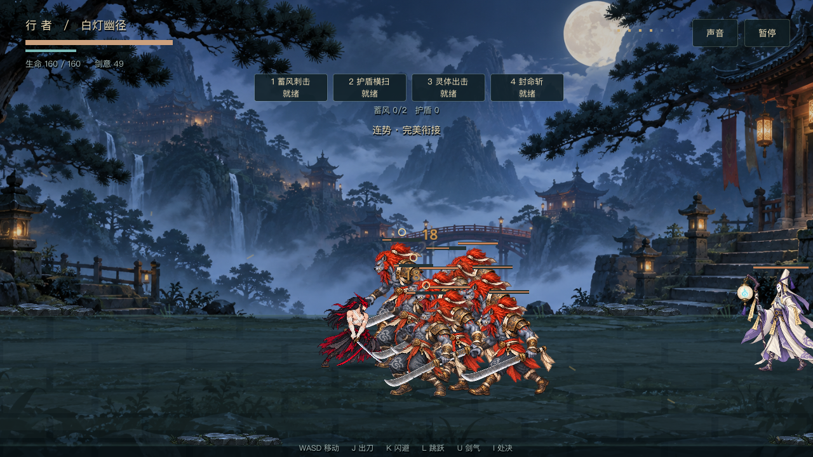

小兵加量 · Boss 带 3 个小兵

Boss 战加入 3 个刀妖。Boss 和小兵共用最多 2 个攻击名额，全部击败后进入掉落结算。
三个普通房间从各 2 只增加到 6、8、10 只。小兵等候圈缩至 68，方便群体命中；同时攻击上限仍为 2，远程威胁最多 1。

Godot 正式 Run.step 推进六秒群战。保留正式排兵与血量，仅把玩家移至接敌处并固定取景；机器人输入，未代表真人手感验收。
| 房间 | 近战小兵 | 远程 | 总数 |
|---|
| 刀妖房 | 6 | 0 | 6 |
| 弓妖房 | 7 | 1 弓手 | 8 |
| 灯巫房 | 9 | 1 法师 | 10 |
实际房间站位



群战中的多目标命中

整关机器人正常战斗击败 28 个敌人，进入掉落结算。现有回归通过，怪物专项 76 项通过，包含人数、错位排兵、远程数量、攻击预算与一刀三目标。验证日志 · 渲染日志
代码未提交。步态质量仍沿用上轮候选。